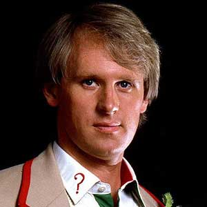

Portrayed by Peter Davison
|  |
After Tom Baker, the Fourth Doctor, and the BBC had announced that he was leaving the role, the show's producers decided that the next Doctor was to be played by someone who presented something of a physical contrast to Baker and by an actor who was already firmly established in the British public's mind. Peter Davison was chosen due to his critically acclaimed role as Tristan Farnon in the BBC series All Creatures Great and Small which had Doctor Who producer John Nathan-Turner as line producer. The Fifth Doctor's era was notable for a "back to the basics" attitude, in which "silly" humour (and, to an extent, horror) was kept to a minimum, and more scientific accuracy was encouraged by the producer, John Nathan-Turner. It was, at times, a darker and grittier series, in part for seeing the death of one of his companions, Adric. It was also notable for the reintroduction of many of the Time Lord's enemies, such as the Master, Cybermen, Omega (a founding-father of Gallifrey), the Black and White Guardians, and the Silurians. |